전자계산기기사 (2010-10-10 기출문제)
1과목: 시스템 프로그래밍
1. 다음 중 로더(Loader)의 기능이 아닌 것은?
- Allocation
- Link
- Compile
- Relocation
(정답률: 77%)

2. 원시 프로그램을 컴파일러가 수행되고 있는 컴퓨터의 기계어로 번역하는 것이 아니라, 다른 기종에 맞는 기계어로 번역하는 것은?
- 디버거
- 인터프리터
- 프리프로세서
- 크로스 컴파일러
(정답률: 67%)
3. 운영체제의 운영 기법 중 여러 명의 사용자가 사용하는 시스템에서 컴퓨터가 사용자들의 프로그램을 번갈아가며 처리해 줌으로써 각 사용자에게 독립된 컴퓨터를 사용하는 느낌을 주는 기법은?
- Time sharing system
- Batch processing system
- Multi programming system
- Real time processing system
(정답률: 56%)
4. 절대 로더에서 연결(linking) 기능의 주체는?
- 컴파일러
- 로더
- 어셈블러
- 프로그래머
(정답률: 70%)
5. JCL(Job Control Language)에 대한 설명으로 틀린 것은?
- JCL은 OS와 사용자 간의 정보제공 언어이다.
- JCL은 사용자 Job과 그의 시스템에 대한 요구를 일치시키는 기능을 갖는다.
- 사용자는 JCL을 이용하여 그의 JOB 단계 순서와 운영에 대한 사항을 자세히 서술하여 시스템을 제어할 수 있다.
- JCL은 기계어를 직접 수정하는 언어이다.
(정답률: 74%)
6. 우선순위 스케줄링 알고리즘에서 발생할 수 있는 무한연기 현상을 해결하기 위해서 제안된 방법은?
- 세마포어(semaphore)
- 에이징(aging) 기법
- 문맥교환(context switching)
- 구역성(locality)
(정답률: 58%)
7. 운영체제의 성능 평가 기준 중 시스템이 주어진 문제를 정확하게 해결하는 정도를 의미하는 것은?
- Throughput
- Turn around time
- Availability
- Reliability
(정답률: 45%)
8. 페이지 교체 기법 중 최근에 사용하지 않은 페이지를 교체하는 기법으로 최근의 사용 여부를 확인하기 위해서 각 페이지마다 2개의 비트, 즉 참조 비트와 변형 비트가 사용되는 것은?
- OPT
- SCR
- LFU
- NUR
(정답률: 64%)
9. 워킹 셋에 대한 설명으로 틀린 것은?
- 프로세스가 일정 시간 동안 자주 참조하는 페이지들의 집합이다.
- 데닝이 제안한 것으로, 프로그램의 Locality 특징을 이용한다.
- 프로세스가 실행되는 동안 주기억장치를 참조할 때 일부 페이지만 집중적으로 참조하는 성질을 의미한다.
- 자주 참조되는 워킹 셋을 주기억장치에 상주시킴으로써 페이지 부재 및 페이지 교체 현상을 줄일 수 있다.
(정답률: 64%)
10. 기호 번지를 사용한 각종 데이터나 명령어가 기억된 번지 값을 특정 레지스터로 가져오도록 하는 어셈블리어 명령은?
- XLAT
- LEA
- XCHG
- RET
(정답률: 48%)
11. 일반적인 로더(general loader)에 가장 가까운 것은?
- Direct Loader
- Absolute Loader
- Compile And Go Loader
- Direct Linking Loader
(정답률: 66%)
12. 프로그램 내에서 양쪽 오퍼랜드에 기억된 내용을 서로 바꾸어야 할 때 사용하는 어셈블리어 명령은?
- NEG
- CBW
- CWD
- XCHG
(정답률: 70%)
13. 프로그래밍 언어의 해독 순서는?
- 링커 → 로더 → 컴파일러
- 컴파일러 → 링커 → 로더
- 로더 → 링커 → 컴파일러
- 컴파일러 → 로더 → 링커
(정답률: 62%)
14. 은행원 알고리즘과 연계되는 교착상태 해결 방법은?
- 회피 기법
- 예방 기법
- 발견 기법
- 회복 기법
(정답률: 70%)
15. 매크로 프로세서의 기본 수행 기능이 아닌 것은?
- 매크로 정의 인식
- 매크로 정의 저장
- 매크로 호출 인식
- 매크로 호출 저장
(정답률: 65%)
16. PCB에 포함되는 정보가 아닌 것은?
- 프로세스의 현 상태
- 프로세스의 고유 구별자
- 프로세스의 우선 순위
- 파일 할당 페이지
(정답률: 61%)
17. 로더의 종류 중 다음 설명에 해당하는 것은?
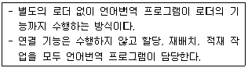
- 절대 로더
- Compile And Go 로더
- 직접 연결 로더
- 동적 적재 로더
(정답률: 78%)
18. 어떤 기호적 이름에 상수 값을 할당하는 어셈블리어 명령은?
- DC
- USING
- LTORG
- EQU
(정답률: 75%)
19. 0과 1의 2진수로만 되어 있으며, 컴퓨터가 바로 이해하고 수행할 수 있는 가장 기초적인 언어를 의미하는 것은?
- 고급언어
- 기계어
- 저급언어
- 어셈블리어
(정답률: 85%)
20. 작성된 표현식이 BNF의 정의에 의해 바르게 작성되었는지를 확인하기 위해 만들어진 Tree의 명칭은?
- Parse Tree
- Binary Search Tree
- Binary Tree
- Skewed Tree
(정답률: 66%)
2과목: 전자계산기구조
21. 다음은 ADD(덧셈) 연산을 위한 마이크로 오퍼레이션이다. 2)항에 적합한 마이크로 오퍼레이션은?
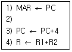
- IR ← MAR
- PC ← PC+2
- R ← R*R
- MBR ← PC
(정답률: 50%)
22. 다음 중 연산에서 overflow가 발생되지 않는 것은? (단, 음수는 2의 보수로 표현된 것임)
- 0100 0000 + 1100 0000
- 1000 0000 + 1100 0000
- 0100 0000 + 0100 0000
- 1000 0000 + 1100 0001
(정답률: 23%)
23. 비수치 데이터에서 마스크를 이용하여 불필요한 부분을 제거하기 위한 연산은?
- OR
- XOR
- AND
- NOT
(정답률: 62%)
24. 사이클 스틸과 인터럽트의 차이를 옳게 설명한 것은?
- 사이클 스틸은 주기억장치의 사이클 타임을 중앙처리장치로부터 DMA가 일시적으로 빼앗는 것으로 중앙처리장치는 주기억장치에 접근할 수 없다.
- 사이클 스틸은 중앙처리장치의 상태보존이 필요하다.
- 인터럽트는 중앙처리장치의 상태보존이 필요 없다.
- 인터럽트는 정전의 경우와는 관계없다.
(정답률: 69%)
25. 다음 메모리 구조에 대한 설명 중 가장 옳은 것은?
- 캐시는 가장 많이 쓰이고 있는 프로그램과 데이터를 저장하지만 보조기억장치(가상메모리)는 CPU에 의하여 현재 쓰이지 않는 부분을 저장한다.
- 캐시는 가장 많이 쓰이고 있는 프로그램과 데이터를 저장하고 보조기억장치(가상메모리)도 CPU에 의하여 현재 가장 많이 쓰이고 있는 부분을 저장한다.
- 보조기억장치(가상메모리)는 가장 많이 쓰이고 있는 프로그램과 데이터를 저장하지만 캐시는 CPU에 의하여 현재 쓰이지 않는 부분을 저장한다.
- 보조기억장치(가상메모리)와 캐시 모두 CPU에 의하여 현재 쓰이지 않는 부분을 저장한다.
(정답률: 55%)
26. 마이크로프로세서의 연산단위를 결정하는 기준에 포함되지 않는 것은?
- CPU 내부 버스의 크기
- 외부버스의 크기
- 메모리 용량
- 레지스터의 크기
(정답률: 32%)
27. 가상기억장치에서 새 페이지와 주기억장치내의 페이지를 바꾸는 것은?
- thrashing
- swapping
- buffering
- mapping
(정답률: 73%)
28. 우선순위에 의한 중재방식 중 중재동작이 끝날 때마다 모든 마스터들의 우선순위가 한 단계씩 낮아지고 가장 우선순위가 낮았던 마스터가 최상위 우선순위를 가지는 방식은?
- 회전 우선순위
- 임의 우선순위
- 동등 우선순위
- 최소-최근사용 우선순위
(정답률: 53%)
29. 버퍼 메모리의 목적에 해당되지 않는 것은?
- 주기억장치 용량을 크게 한다.
- 데이터를 주기억장치에서 읽어내거나 주기억장치에 저장하기 위해 임시로 자료를 기억하는 공간이다.
- 한번 저장되어 있는 데이터가 CPU에서 여러 번 사용된다.
- 많은 데이터를 주기억장치에서 한번에 가져 나간다.
(정답률: 48%)
30. 병렬처리기의 종류에 대한 설명으로 틀린 것은?
- 시간적 병렬성을 위해 중첩처리를 행하는 파이프라인 처리기(Pipelined Processor)
- 공간적 병렬성을 위해 다수의 동기된 처리기를 사용하는 배열 처리기(Array Processor)
- 기억장치나 데이터베이스 등의 자원은 공유하며 상호 작용하는 처리기들을 통하여 비동기적 병렬성을 얻는 다중 처리기(Multiprocessor)
- 양방향 처리를 비동기적으로 수행하는 벡터 처리기(Vector Processor)
(정답률: 53%)
31. 그림에서 듀티 사이클(duty cycle)은 몇 [%] 인가?
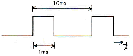
- 10[%]
- 20[%]
- 30[%]
- 40[%]
(정답률: 67%)
32. 어떤 프로그램이 수행 중 인터럽트 요인이 발생했을 때 CPU가 확인할 사항에 속하지 않는 것은?
- 프로그램 카운터의 내용
- 관련 레지스터의 내용
- 상태 조건의 내용
- 스택의 내용
(정답률: 57%)
33. CPU에 의해서 입출력이 일어나지 않고 별도의 입출력 제어기에 의해서 일어나는 입출력은?
- 프로그램에 의한 I/O
- 인터럽트에 의한 I/O
- DMA 제어기에 의한 I/O
- subroutine에 의한 I/O
(정답률: 59%)
34. 다음 중 처리되는 곳이 다른 하나는?
- 가산
- AND
- 어드레스 증가
- 자리이동
(정답률: 38%)
35. 캐시 메모리의 매핑방법 중 같은 인덱스를 가졌으나 다른 tag를 가진 두 개 이상의 워드가 반복하여 접근된다면 히트율이 상당히 떨어질 수 있는 것은?
- associative 매핑
- set-associative 매핑
- direct 매핑
- indirect 매핑
(정답률: 28%)
36. 그레이 코드(Gray Code)에 대한 설명으로 틀린 것은?
- 인접한 숫자들의 비트가 한 비트만 변화되어 만들어진 코드이다.
- 그레이 코드 자체로 연산을 불가능하므로 2진수로 변환 후 연산을 수행하고 그 결과를 다시 그레이 코드로 변환하여야 한다.
- 그레이 코드를 2진 코드로 혹은 2진 코드를 그레이 코드로 변환시 두 입력 값에 대해 AND 연산을 수행한다.
- 그레이 코드 값 (0111)G는 10진수로 5를 의미한다.
(정답률: 56%)
37. 다중처리기 상호 연결 방법 중 하나의 프로세서에 하나의 버스가 할당되어 버스를 이용하려는 프로세서간 경쟁이 적은 것은?
- 시분할 공유버스
- 크로스바 교환 행렬
- 하이퍼큐브
- 다중포트 메모리
(정답률: 32%)
38. 연산 결과를 항상 누산기(Accumulator)에 저장하는 명령어 형식은?
- 0-주소 명령어
- 1-주소 명령어
- 2-주소 명령어
- 3-주소 명령어
(정답률: 74%)
39. 컴퓨터에서 10진 데이터를 연산처리 할 때의 데이터 형식은?
- 16진수 형태
- 2진수 형태
- 팩(pack) 형태
- 언팩(unpack) 형태
(정답률: 50%)
40. 다음은 ISZ 명령어(increment and skip if zero)를 수행하기 위해 필요한 마이크로 연산이다. ( )에 들어갈 문자를 옳게 표시한 것은?
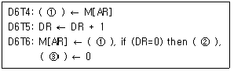
- ① : DR, ② : PC ← PC+1, ③ SC
- ① : AR, ② : SC ← SC+1, ③ DR
- ① : DR, ② : SC ← SC+1, ③ AR
- ① : AR, ② : PC ← PC+1, ③ E
(정답률: 65%)
3과목: 마이크로전자계산기
41. 포팅을 통해 리눅스 프로그램/유틸리티를 MS 윈도에서 사용할 수 있도록 하는 프로그램은?
- cygwin
- perl
- JDK
- driver development kit
(정답률: 64%)
42. 메모리 중 리플레시(refresh) 사이클이 사용되는 것은?
- SRAM
- EPROM
- DRAM
- RLA
(정답률: 44%)
43. 각 데이터(data)의 끝 부분에 특별한 체크(checker) 바이트(byte)가 있어 에러(error)를 찾아내는 방법은?
- data flow check
- parity scheme check
- data conversion check
- cycle redunancy check
(정답률: 43%)
44. 코루틴(Coroutine)에 관한 설명으로 틀린 것은?
- 서브루틴을 일반화시킨 형태이다.
- Conway에 의해서 최초로 사용되었다.
- 호출과 호출 사이의 내부 상태 정보가 보존되어야 한다.
- 코루틴을 사용해서는 파리미터를 전달할 수 없다.
(정답률: 50%)
45. 다음 기억소자 중 기억된 내용을 여러 번 지워서 사용할 수 있는 것은?
- ROM
- PROM
- EPROM
- PLA
(정답률: 53%)
46. 마이크로컴퓨터용 소프트웨어 개발 과정으로 옳은 것은?
- 문제설정 → 프로그램 설계 및 분석 → 테스트 → 코딩 → 유지보수
- 문제설정 → 코딩 → 프로그램 설계 및 분석 → 테스트 → 유지보수
- 문제설정 → 코딩 → 테스트 → 프로그램 설계 및 분석 → 유지보수
- 문제설정 → 프로그램 설계 및 분석 → 코딩 → 테스트 → 유지보수
(정답률: 48%)
47. 다음 신호 중 양방향 신호는?
- 어드레스 신호
- 데이터 신호
- 인터럽트요청 신호
- 리셋 신호
(정답률: 55%)
48. 스택에 관한 설명으로 틀린 것은?
- 스택은 메모리에만 존재한다.
- 스택에서 읽을 때는 pop 명령을 사용한다.
- 마이크로프로세서에서 스택은 인터럽트와 관련이 깊다.
- 스택은 LIFO 메모리 장치이다.
(정답률: 74%)
49. 인출 사이클(fetch cycle)에서 active low로 되지 않는 신호는? (단, Z80 기준)
- M1
- WR
- RFSH
- MREQ
(정답률: 48%)
50. 마이크로컴퓨터의 ROM이 4096비트이면 단어의 길이가 8비트인 경우 몇 워드인가?
- 182
- 312
- 256
- 512
(정답률: 44%)
51. 연산기(ALU)가 공통적으로 갖는 기능이 아닌 것은?
- 2진 가ㆍ감산
- 불 대수 연산
- 보수 계산
- 주소 지정
(정답률: 71%)
52. 마이크로컴퓨터의 기억장치에 대한 평가요소로 적절하지 않은 것은?
- 기억용량
- 동작속도
- 신뢰도
- 데이터변환 기법
(정답률: 50%)
53. 256×2램(RAM)으로 주소 (1000)16 ~ (17FF)16 사이의 기억장치를 구성하려면, 필요한 램의 개수는? (단, 기억장치 한 번지는 8비트로 되어 있다.)
- 8
- 16
- 32
- 64
(정답률: 45%)
54. 고정배선제어에 비해 마이크로프로그램을 이용한 제어 방식이 가지는 장점이 아닌 것은?
- 변경 가능한 제어기억소자를 사용하면 제어의 변경이 가능하다.
- 동작 속도를 극대화 할 수 있다.
- 제어 논리의 설계를 프로그램 작업으로 수행할 수 있다.
- 개발기간을 단축시킬 수 있고 에러에 대한 진단 및 수정이 쉽다.
(정답률: 50%)
55. 순서도는 일반적으로 표시되는 정보에 따라 종류를 구분하게 되는데 다음 중 순서도에 해당되지 않는 것은?
- 시스템 순서도(system flowchart)
- 일반 순서도(general flowchart)
- 세부 순서도(detail flowchart)
- 실체 순서도(entity flowchart)
(정답률: 65%)
56. 마이크로컴퓨터에서 자주 이용되는 표준화된 bus들이다. 이 중 성격이 다른 것은?
- S-100 bus
- Multi-bus
- RS-232C
- IEEE-488
(정답률: 32%)
57. 매크로 레벨 구조의 정의가 아닌 것은?
- 명령의 집합
- 데이터의 형식
- 소프트웨어 종류
- 기억장치의 논리적 호출 방식
(정답률: 59%)
58. 직렬 데이터 전송방식에 해당하지 않는 것은?
- RS232C
- P-ATA
- USB
- IEEE1394
(정답률: 44%)
59. 실제 하드웨어 시스템이 만들어지기 전에 미리 실행해 보아 완성된 시스템에서 디버깅을 보다 용이하게 할 수 있는 기능을 가진 장치는?
- Editor
- Compiler
- Locator
- Emulator
(정답률: 56%)
60. Z80 CPU의 하드웨어적인 인터럽트 요구 및 처리방법에 해당하는 것은?
- WAIT 제어신호, NMI 제어신호
- INT 제어신호, WAIT 제어신호
- MREQ 제어신호, NMI 제어신호
- INT 제어신호, NMI 제어신호
(정답률: 32%)
4과목: 논리회로
61. 조합논리 회로가 아닌 것은?
- ENCODER
- RAM
- MUX
- DECODER
(정답률: 69%)
62. 다음 플립플롭에서 D 값이 기억되기 위한 클록 조건은?
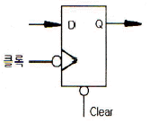
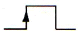
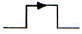
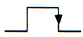
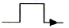
(정답률: 71%)
63. 패리티비트 코드의 설명으로 옳지 않은 것은?
- 잡음이 들어가면 에러의 가능성이 있어 이를 검출 할 수 있다.
- odd 패리티와 even 패리티가 있다.
- 두 비트가 동시에 에러가 발생해도 검출이 가능하다.
- 송신측에 패리티 발생기가 있고 수신측에 검사기가 있다.
(정답률: 66%)
64. 다음은 even hamming code로 표시된 BCD 정보 중 1bit error가 발생된 값이 아래와 같을 때 이를 옳게 수정한 값은?
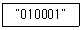
- 0110001
- 0110101
- 0101001
- 0100101
(정답률: 15%)
65. 다음과 같은 2-state를 갖는 회로에서 출력 논리값은?
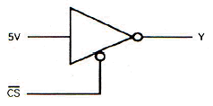
- (CS)‘ 단자가 0일 때, Y=0
- (CS)‘ 단자가 0일 때, Y=1
- (CS)‘ 단자가 1일 때, Y=0
- (CS)‘ 단자가 1일 때, Y=1
(정답률: 50%)
66. CMOS 회로의 특징이 아닌 것은?
- 정전기에 약하여 취급에 주의하여야 한다.
- 동작 주파수가 증가하면 팬 아웃도 증가한다.
- TTL에 비하여 전력소모가 적다.
- DC 잡음 여유는 보통 전원 전압의 40[%] 정도이다.
(정답률: 48%)
67. 컴퓨터의 키보드(keyboard)를 누르면 어떤 회로를 거쳐서 코드화 되는가?
- decoder
- encoder
- multiplexer
- demultiplexer
(정답률: 63%)
68. 다음은 무안정 멀티바이브레이터에서 C=0.47[μF], RA=RB=1[kΩ]일 때 발생되는 펄스의 듀티사이클 D는?
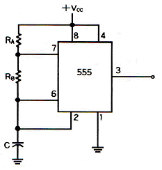
- D ≅ 67[%]
- D ≅ 68[%]
- D ≅ 69[%]
- D ≅ 70[%]
(정답률: 37%)
69. 다음 회로에서 입력이 A=1, B=1, Ci=1로 될 경우 출력 X와 Y의 값은?
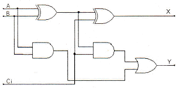
- X=0, Y=0
- X=0, Y=1
- X=1, Y=0
- X=1, Y=1
(정답률: 46%)
70. 입력 펄스의 수를 세는 회로는?
- 복호기
- 계수기
- 레지스터
- 인코더
(정답률: 52%)
71. 다음 중 나머지 셋과 다른 논리 값을 갖는 것은?
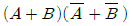
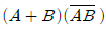
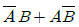
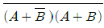
(정답률: 57%)
72. I/O port 또는 기억장치 등을 enable시키기 위하여 사용되는 장치는?
- MUX
- DEMUX
- encoder
- decoder
(정답률: 42%)
73. 병렬 가산기를 구성하는 방식 중 look-ahead 방식이 있는데 이것과 가장 관련이 깊은 것은?
- 가격
- 결선의 수
- 속도
- 정확도
(정답률: 37%)
74. 다음 레지스터 형태 중 한 순간에 단지 1비트의 데이터가 들어가고, 모든 데이터 비트가 한번에 출력되는 형태는?
- PISO
- PIPO
- SISO
- SIPO
(정답률: 37%)
75. 다음 논리회로의 출력 Y와 같은 게이트는?
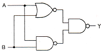
- XNOR
- OR
- XOR
- NOR
(정답률: 48%)
76. minterm으로 표시된 다음 boolean function을 간략화 한 것은? (단, d 함수는 don't care 임)
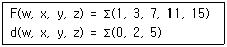
- w x+y z'
- w'z+yz
- w'z'+y z
- wx'+yz
(정답률: 45%)
77. 2진수 10110101을 그레이 코드(gray code)로 변환하면?
- 01001010
- 01001011
- 00010000
- 11101111
(정답률: 79%)
78. 다음 논리회로에 대한 진리값 중 틀린 것은?
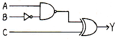
- B = 0, C = 0, Y = A'
- B = 0, C = 1, Y = A
- B = 1, C = 0, Y = 0
- B = 1, C = 1, Y = 0
(정답률: 25%)
79. RS 플립플롭으로 T 플립플롭을 구현했을 때 옳은 것은?
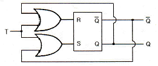
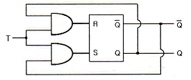
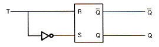
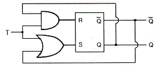
(정답률: 52%)
80. 다음 표와 같이 동작하는 MN 플립플롭이 있다고 가정할 경우, 현재상태 출력 Q=1일 때 다음상태 출력 Q+1=1이기 위한 M과 N의 입력으로 가장 적당한 것은? (단, x는 don't care)
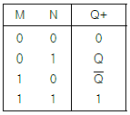
- M=1, N=x
- M=0, N=x
- M=x, N=1
- M=x, N=0
(정답률: 35%)
5과목: 데이터통신
81. 다음이 설명하고 있는 것은?
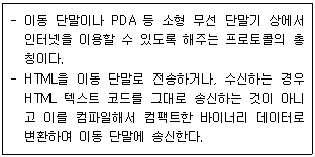
- HTTP
- FTP
- SMTP
- WAP
(정답률: 72%)
82. 다음은 OSI(Open System Interconnection) 7계층 중 어떤 계층에 대한 설명인가?
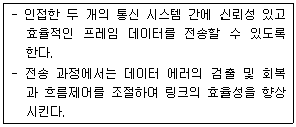
- 물리 계층
- 데이터링크 계층
- 전송 계층
- 네트워크 계층
(정답률: 58%)
83. 문자 동기 전송방식에서 데이터 투명성(data Transparent)을 위해 삽입되는 제어문자는?
- ETX
- STX
- DLE
- SYN
(정답률: 66%)
84. 에러 제어에 사용되는 자동반복 요청(ARQ) 기법이 아닌 것은?
- stop-and-wait ARQ
- go-back-N ARQ
- auto-repeat ARQ
- selective-repeat ARQ
(정답률: 53%)
85. 효율적인 전송을 위하여 넓은 대역폭(혹은 고속 전송 속도)을 가진 하나의 전송링크를 통하여 여러 신호(혹은 데이터)를 동시에 실어 보내는 기술은?
- 회선 제어
- 다중화
- 데이터 처리
- 전위 처리기
(정답률: 69%)
86. 다음 중 통신망의 체계적인 운용 및 관리를 위한 TMN(Telecommunication Management Network)의 기능 요소에 해당하지 않는 것은?
- SNL(Service Network Layer)
- NML(Network Management Layer)
- EML(Element Management Layer)
- NEL(Network Element Layer)
(정답률: 37%)
87. 데이터 통신에서 오류를 검출하는 기법으로 틀린 것은?
- Parity Check
- Block Sum Check
- Cyclic Redundancy Check
- Huffman Check
(정답률: 62%)
88. 최초의 라디오 패킷(radio packet) 통신방식을 적용한 컴퓨터 네트워크 시스템은?
- DECNET
- ALOHA
- SNA
- ARPANET
(정답률: 62%)
89. LAN의 매체 접근 제어 방식인 CSMA/CD에 대한 설명으로 틀린 것은?
- 버스 또는 트리 토폴로지에서 가장 많이 사용되는 매체 접근 제어 방식이다.
- MA(Multiple Access)는 네트워크가 비어 있으면 누구든지 사용 가능하다.
- CS(Carrier Sense)는 네트워크에 데이터를 실어 보내는 기능을 담당한다.
- CD(Collision Detection)는 프레임을 전송하면서 충돌 여부를 조사한다.
(정답률: 39%)
90. 다음이 설명하고 있는 데이터 링크 제어 프로토콜은?
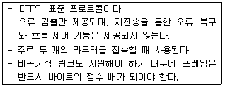
- HDLC
- PPP
- LAPB
- LLC
(정답률: 34%)
91. 호스트의 물리 주소를 통하여 논리 주소인 IP 주소를 얻어오기 위해 사용되는 프로토콜은?
- ICMP
- IGMP
- ARP
- RARP
(정답률: 53%)
92. HDLC(High-level Data Link Control)의 정보 프레임에 대한 용도 및 기능으로 가장 적합한 것은?
- 사용자 데이터 전달
- 흐름 제어
- 에러 제어
- 링크 제어
(정답률: 52%)
93. 경로 지정 방식에서 각 노드에 도착하는 패킷을 자신을 제외한 다른 모든 것을 복사하여 전송하는 방식은?
- 고정 경로 지정
- 플러딩
- 임의 경로 지정
- 적응 경로 지정
(정답률: 58%)
94. 다음 ( ) 안에 들어갈 알맞은 용어는?
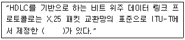
- LAPB
- LAPD
- LAPS
- LAPF
(정답률: 50%)
95. 데이터 전송에 있어 데이터 그램 패킷 교환 방식으로 적합한 것은?
- 음성이나 동영상과 같이 연속적인 전송
- 응답시간이 별 문제가 되지 않는 전자 우편이나 파일 전송
- 간헐적으로 발생하는 짧은 메시지의 전송
- 최대 길이가 제한된 데이터 전송
(정답률: 24%)
96. 핸드오프(Hand-off) 시에 사용할 채널을 먼저 확보하여 연결한 후, 현재 사용 중인 채널의 연결을 끊는 방식은?
- Soft Hand-off
- Hard Hand-off
- Mobile Controlled Hand-off
- Network Controlled Hand-off
(정답률: 44%)
97. 전송 매체상의 전송 프레임마다 해당 채널의 시간 슬롯이 고정적으로 할당되는 다중화 방식은?
- 주파수 분할 다중화
- 동기식 시분할 다중화
- 통계적 시분할 다중화
- 코드 분할 다중화
(정답률: 72%)
98. 동기식 시분할 다중화(Synchronous TDM)의 설명으로 틀린 것은?
- 전송 시간을 일정한 간격의 시간 슬롯으로 나누고, 이를 주기적으로 각 채널을 할당한다.
- 하나의 프레임은 일정한 수의 시간 슬롯으로 구성된다.
- 전송 데이터가 있는 경우에만, 시간 슬롯을 할당하여 데이터를 전송한다.
- 송신단에서는 각 채널의 입력 데이터를 각각의 채널 버퍼에 저장하고, 이를 순차적으로 읽어 낸다.
(정답률: 53%)
99. TCP 프로토콜을 사용하는 응용 계층의 서비스가 아닌 것은?
- SNMP
- FTP
- Telnet
- HTTP
(정답률: 43%)
100. 디지털 변조에서 디지털 데이터를 아날로그 신호로 변환시키는 것을 키잉(Keying)이라고 하며, 키잉은 기본적으로 3가지 방식이 있다. 이에 해당하지 않는 것은?
- Amplitude-Shift Keying
- Code-Shift Keying
- Frequency-Shift Keying
- Phase-Shift Keying
(정답률: 48%)